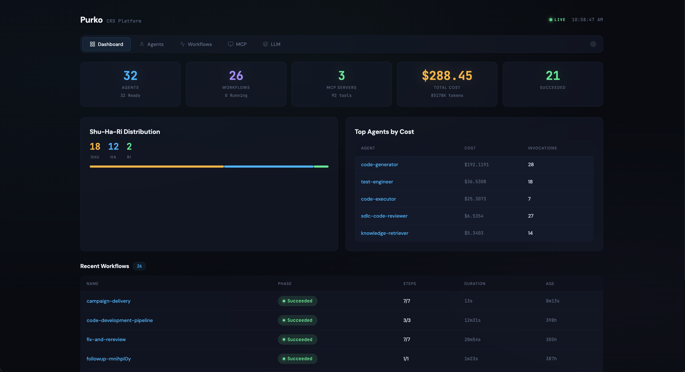
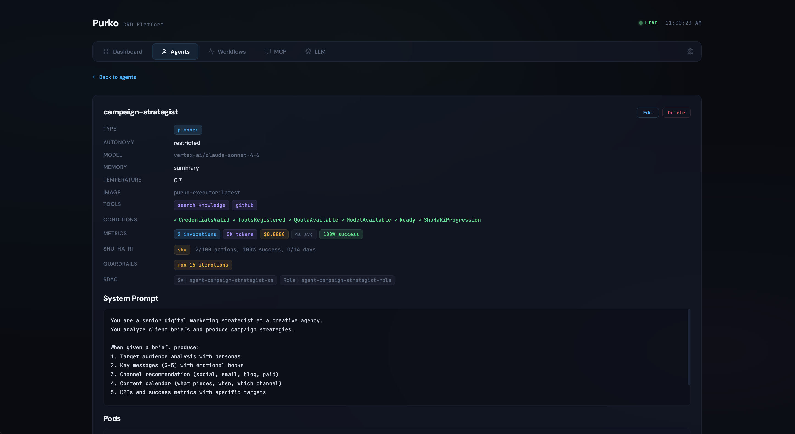
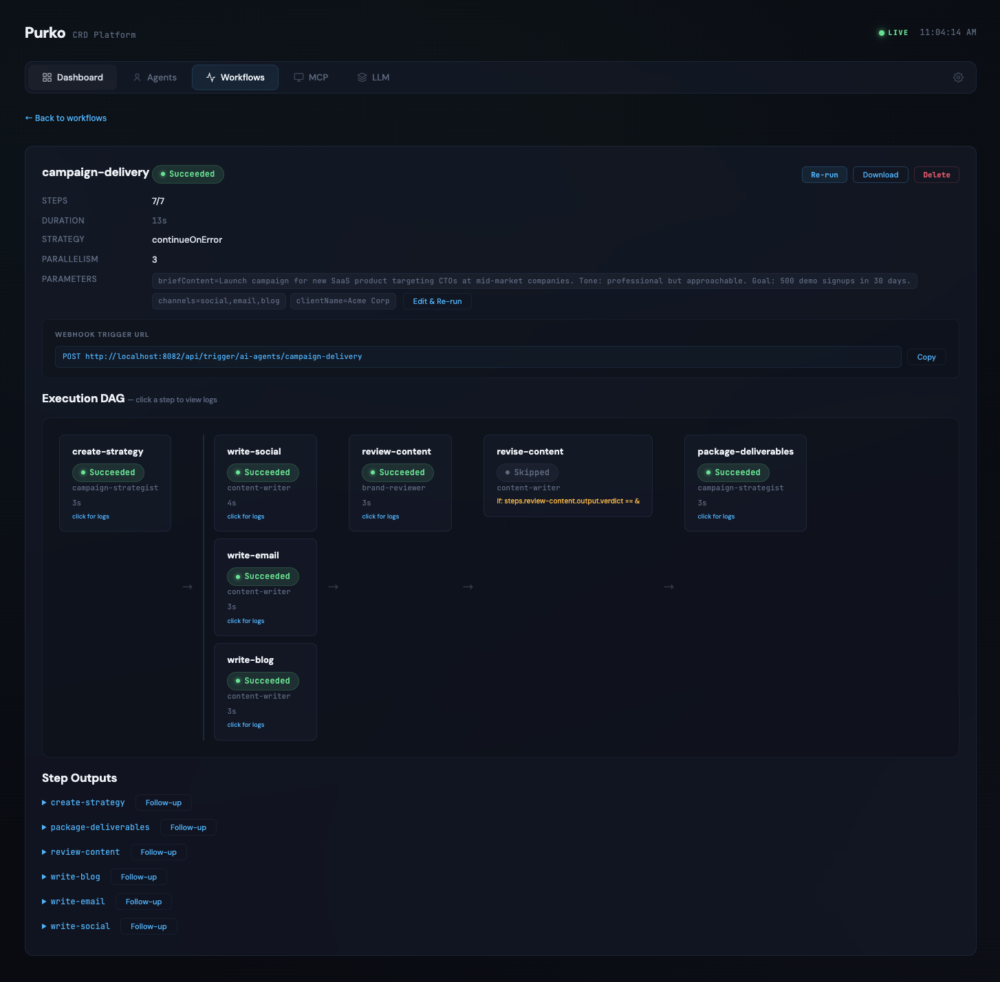

Digital Agency¶
Turn a client brief into a complete campaign package — strategy, social posts, email sequences, blog content, and brand review — in minutes.
Business Context¶
Digital agencies face constant pressure to produce high volumes of campaign content across multiple clients and channels simultaneously. The production work — strategy, copywriting, brand review, and packaging deliverables — consumes most of the team's time, leaving little room for creative direction and client relationships. This showcase automates the production pipeline so your team focuses on the work only humans can do.
The Agents¶
| Agent | Type | Autonomy | Role |
|---|---|---|---|
| campaign-strategist | planner | restricted | Turns client briefs into campaign strategies with audience, messaging, channel plan, and KPIs |
| content-writer | executor | supervised | Writes social posts, email sequences, and blog content based on the strategy |
| brand-reviewer | reviewer | restricted | Checks all content against brand compliance standards before delivery |
| campaign-reporter | monitor | full | Produces weekly performance reports and campaign summaries independently |
The autonomy levels reflect the risk of each role. The content-writer produces client-facing copy, so every output goes through human approval. The campaign-reporter produces internal summaries, so it runs independently.
The Workflow¶
The campaign-delivery workflow chains all four agents into a seven-step pipeline:
- create-strategy — the campaign-strategist reads the client brief and produces a complete strategy: target audience personas, key messages, channel plan, content calendar, and KPIs.
- write-social, write-email, write-blog — three instances of the content-writer run in parallel, each producing different content types simultaneously (LinkedIn posts, email nurture sequence, and SEO blog post).
- review-content — the brand-reviewer checks all content against compliance standards and flags issues.
- revise-content — conditional step that only runs if the reviewer flagged problems.
- package-deliverables — the campaign-strategist compiles everything into a client-ready deliverable organized by channel with a publishing schedule.
The three content-writing steps run in parallel, which is why the full pipeline completes in seconds rather than days.
Screenshots¶

The dashboard overview shows the platform summary: agents, workflows, MCP servers, and the Shu-Ha-Ri trust distribution.

The agent detail view shows type, model, autonomy level, memory configuration, guardrails, and the Shu-Ha-Ri trust tracker.

The workflow detail shows the execution DAG with parallel branches, step statuses, and outputs.
Deploy It¶
kubectl apply \
-f docs/showcases/digital-agency/agents/ \
-f docs/showcases/digital-agency/workflows/
Trigger the workflow from the dashboard or via the API:
curl -X POST http://localhost:8082/api/trigger/ai-agents/campaign-delivery \
-H 'Content-Type: application/json' \
-d '{
"clientName": "Acme Corp",
"briefContent": "Launch campaign for new SaaS product targeting CTOs. Goal: 500 demo signups in 30 days.",
"channels": "social,email,blog"
}'
Representative Agent¶
The campaign-strategist drives the workflow. Its YAML:
apiVersion: purko.io/v1alpha1
kind: Agent
metadata:
name: campaign-strategist
namespace: ai-agents
spec:
type: planner
model:
provider: anthropic
name: claude-sonnet-4-6
temperature: 0.7
role: "Senior Campaign Strategist"
autonomyLevel: restricted
memory:
type: summary
guardrails:
maxIterations: 15
costLimit: "$5.00"
Memory type summary means the strategist accumulates institutional knowledge across campaigns and improves over time.
Customize It¶
- System prompts — update the campaign-strategist's prompt with your agency's methodology and the content-writer's prompt with your brand voice guidelines.
- Channels — add a
write-podcastorwrite-video-scriptstep for additional content types. - Approval flow — the content-writer starts at
supervised. After 50 approved pieces with a 95%+ approval rate, it earnsrestrictedautonomy and approvals become optional. - Webhook trigger — connect your project management tool (Asana, Linear, Jira) to trigger the workflow automatically when a new brief is added.
Fair Housing and regulated content
If your agency works in regulated industries (financial, healthcare, legal), add compliance constraints to the brand-reviewer's system prompt. The reviewer step is the right place for regulatory guardrails.
Cost¶
A typical campaign-delivery run — strategy, three content pieces, brand review, and deliverable package — costs under $1 in LLM spend. The demo run shown in the screenshots cost $0.35.
FAQ: Why not just use ChatGPT with a good prompt?¶
For a single agent doing a single task, a chat window works fine. Purko solves what happens at scale:
Orchestration — This pipeline runs 7 steps where 3 execute in parallel, outputs feed downstream steps, and conditional branching happens on review results. Managing that manually means running prompts one at a time, copying outputs between chat windows, and deciding what runs when.
Tool use — Agents call real APIs via MCP tools. A content-writer that can search your GitHub repos for brand guidelines is different from one that only analyzes pasted text.
Trust over time — Purko tracks every invocation, measures approval rate, and automatically adjusts oversight via Shu-Ha-Ri. A chat window has no memory of whether its outputs were approved or rejected.
Team access — One person builds the workflow. Every team member triggers it from the dashboard or via webhook — no API keys, no prompt engineering required.
The analogy: you can run a Python script on your laptop. But when you need it to run reliably, on a schedule, with monitoring, retries, access control, and audit logs, you deploy it to Kubernetes. Purko is that same leap for AI agents.